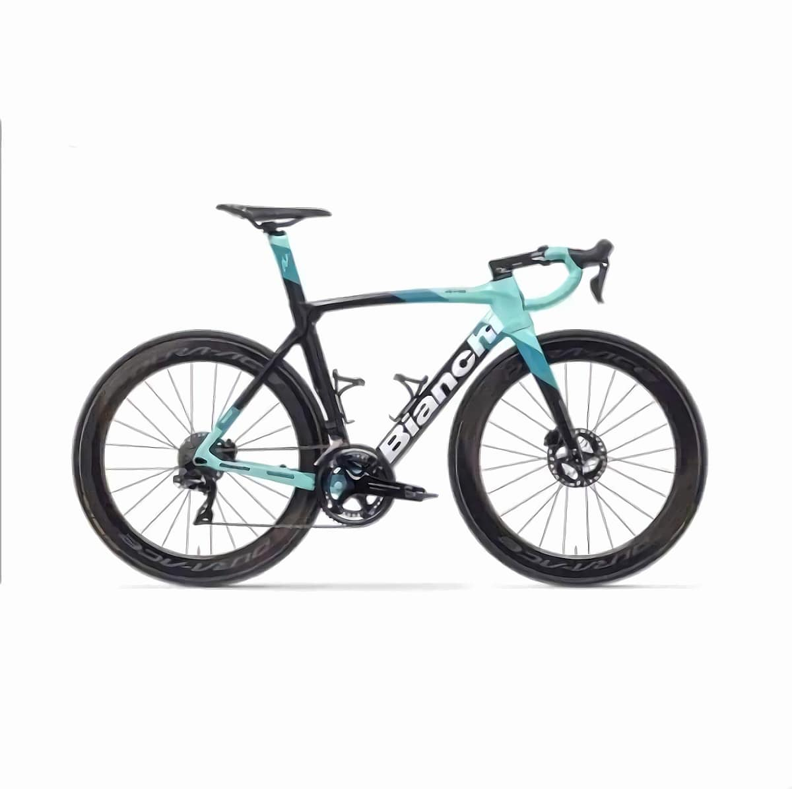
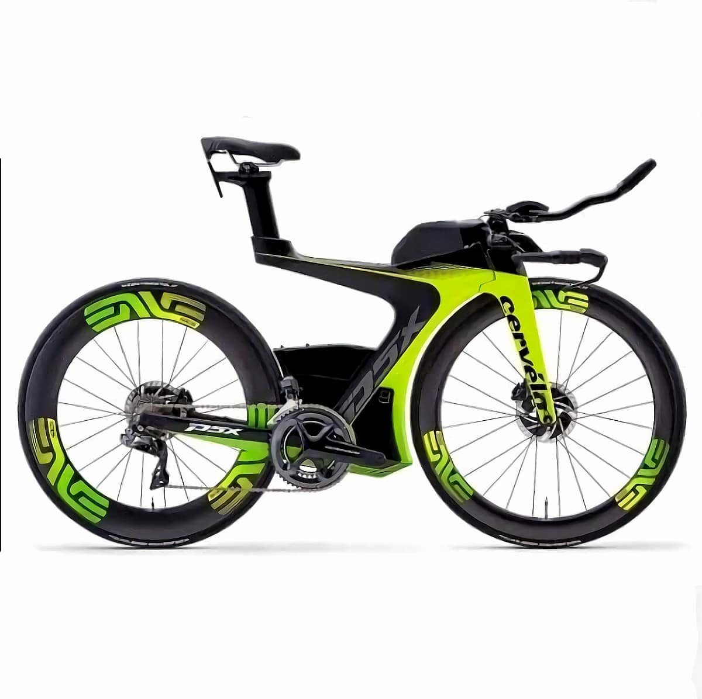
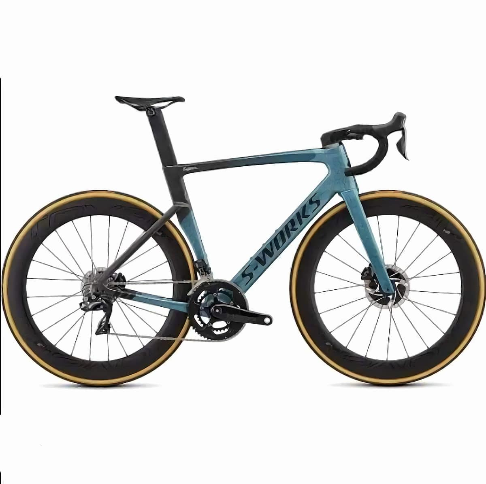

BIKE BRANDS
•Trek
-Trek was founded in 1976 in Waterloo, Wisconsin. It is the largest bike brand in the United States, according to CNBC. Despite the fact that the majority of its production has gone elsewhere, the firm still manufactures some bikes in the United States. As of 2014, it was producing about 25,000 bicycles per year in the United States, accounting for over half of all bicycles made in the country.
-Trek offers a wide variety of bike types at a variety of price points. It manufactures bicycles for men, women, and children, as well as cycling equipment and clothing. Trek makes a number of electric mountain bikes in addition to standard pedal-powered cycles. Bikes range in price from a few hundred dollars to several thousand dollars.
•Cannondale
-Cannondale is a well-known bicycle manufacturer that has been around since the 1970s. Cannonade was born in a Connecticut pickle plant, whereas Trek was formed over a glass of beer by two friends. Initially, the company produced a bike trailer, accessories, and apparel rather than motorcycles.
-The brand's first bike, a touring type, was introduced in 1983. The following year, it released a racing bike. Cannonade made headlines in 1997 by allowing members of the Saeco cycling team (who rode the brand's bike) ride on aluminum frames during the Tour de France. The leader of the Saeco team declared Cannondale bikes to be the best, according to corporate mythology.
•Kona
-Kona Bikes is a newcomer to the scene. Dan Gerhard and Jacob Heilbron founded the company in 1988. The brand is still owned by the couple, and it is still based in the Pacific Northwest.
-Kona is known for being the first firm to manufacture a straight leg mountain bike fork. The bike was designed in collaboration with Brodie (aka Bruce Spicer). Kona currently offers ten fork models for mountain bikes and road bikes of varying sizes.
•Bianchi
-Bianchi, another Italian bike manufacturer, holds the distinction of being the world's longest continuously operating bicycle firm. It all started in 1885, when 21-year-old Eldoardo Bianchi decided to add a chain to the famed "ordinary" bicycles and reduce the front wheel size.
-His plan appeared to be a success. Bianchi was credited with a number of additional innovations in bicycle design and function throughout the years. In 1913, for example, he invented the first ever front brake.
•Cervelo
-Cervelo is another brand that is still in its infancy. It all began in Canada in 1995. The company's mission is straightforward: to develop the world's quickest bike. As a result, whether you're new to riding or looking for a bike for commuting or occasional use, it's probably not a brand you'll look into.
-This might be the brand for you if you constantly feel the urge for speed on your bike, whether you're training for an Ironman or the Tour de France, or simply enjoy a weekend ride. The C series, Series, Series, S series, and T series are the five road bike series offered by Cervelo.
•Santa Cruz
-Santa Cruz Bicycles is a high-end mountain bike company based in Santa Cruz, California. The Santa Cruz Syndicate, a downhill racing team, is one of their sponsors. In 2013, the company relocated from 104 Bronson Street to 2841 Mission Street.
-Rob Roskopp, Mike Marquez, and Rich Novak launched Santa Cruz Bicycles in 1993.Before they met, Roskopp had been a professional skateboarder for many years, and Novak's Santa Cruz Skateboards had released a special "Roskopp" model. To develop various prototypes, Roskopp and Novak collaborated with bike engineer Mike Marquez, who specialized in bicycle suspension, and designer Tom Morris.

•Scott
-Scott Sports SA is a bicycle, winter equipment, motorsports gear, and sportswear manufacturer based in Switzerland. The company's headquarters are in Givisiez, Switzerland, and it has offices throughout Europe, as well as in the United States, South Africa, and India.
-The clip-on aerodynamic handlebar, one of the most significant advancements in the history of cycling, was brought to the public market by Scott in 1989. In his 1989 Tour de France victory, American Greg LeMond skillfully used the handlebar to beat Frenchman Laurent Fignon by about a minute in the 24.5 km final time trial. It was commonly utilized in triathlon and the Race Across America prior to this event.
•Merida
Taiwanese firm with R&D headquarters in Germany that designs, manufactures, and sells bicycles in more than 77 countries across the world. Ike Tseng founded the company in 1972, and it now designs and manufactures over 2 million bicycles each year in Taiwan, China, and Germany.
After making bicycles as an original equipment manufacturer for a variety of other brands, the company launched its own brand, Merida, in 1988. It now designs and manufactures bicycles primarily for its own brand and for brands in which it has a financial stake, such as the now-German brand Centurion.
•Specialized
-Specialized Cycling Components, Inc., often known as SPECIALIZED and styled as SPECIALIZED, is an American company that designs, manufactures, and markets bicycles, bicycle components, and associated items under the brand names "Specialized" and "S-works."
•Orbea
-Orbea is a Spanish bike brand that started out as a rifle company in 1840. It wasn't until the 1930s that it began to create cycles. Thousands of Spaniards were employed during the Civil War, and the company was finally purchased by its employees and turned into a cooperative in the early 1960s.
-The company then expanded its facility and began producing both recreational and road and racing motorcycles. The company now produces a variety of recreational, road, and electric bikes.